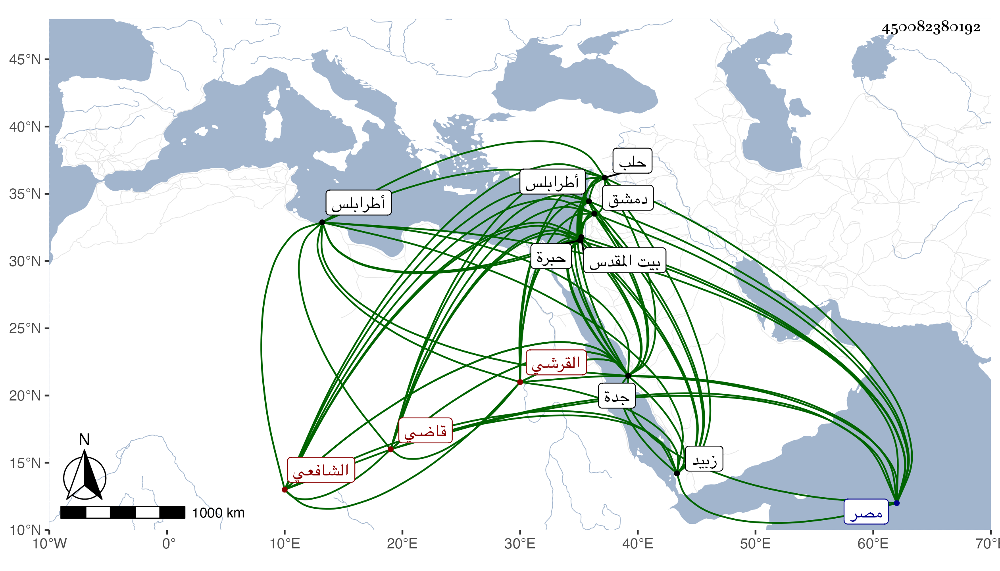

0902Sakhawi.DawLamic.ITO20230111-ara1.EIS1600.450082380192
Biography ID: 450082380192
أحمد بن عبد الحي القيوم بن أبي بكر بن عبد الله بن ظهيرة بن أحمد بن عطية بن ظهيرة محب الدين القرشي الشافعي قاضي جدة وأخو عطية وابن عم كريم الدين عبد الكريم بن عبد الرحمن وزوج أخته فاطمة وأمه من زبيد . ولد في رجب ظنا سنة ثلاث وثلاثين وثمانمائة ونشأ فحفظ القرآن وغيره واشتغل عند شيوخ بلده وسمع من الزين الأميوطي وأبي الفتح المراغي وقريبه أبي السعادات بن ظهيرة ، ومما سمعه عليه جزء ابن الجهم وإحياء القلب الميت ، وأجاز له في سنة ست وثلاثين من أجاز لقريبه المحب محمد بن أبي حامد محمد بن أبي الخير محمد بن أبي السعود محمد بن حسين ، ودخل مصر غير مرة أولها في سنة أربع وخمسين وكذا دخل دمشق وحلب وطرابلس وغيرها وزار بيت المقدس والخليل وناب في قضاء جدة وخطابتها من سنة بضع وستين عن قريبه الكمال أبي البركات بن ظهيرة وغيره فحمدت سيرته لمزيد تواضعه ورفقه ولينه وخفة وطأته ، وهو ممن أكثر التردد إلي في مجاورتي الأخيرة كان الله له .
